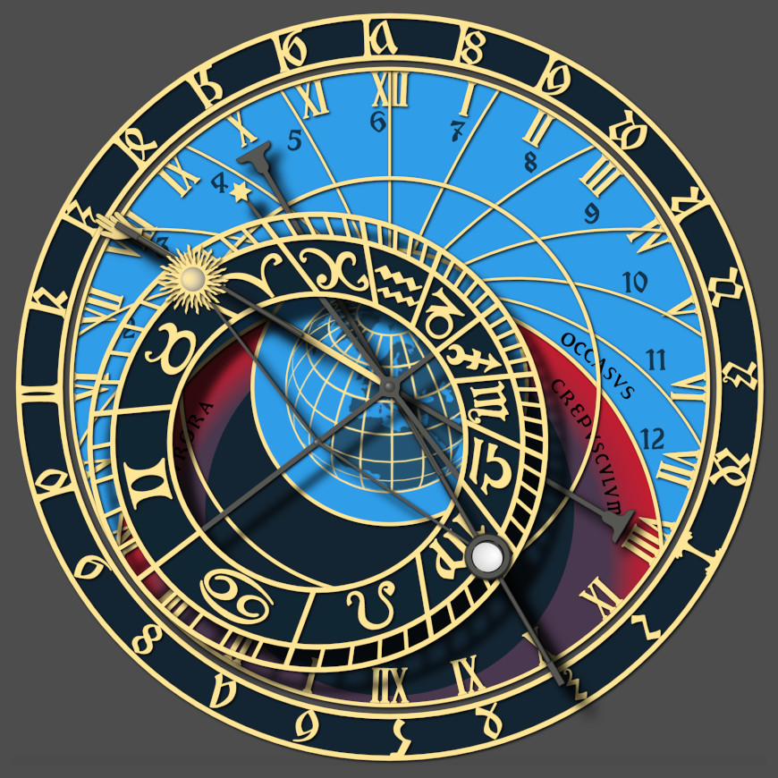

Simulator der Prager astronomischen Uhr

Animation
Play- und Fast-Forward-Tasten (▶️ ⏩) sind verfügbar, um den Zeitverlauf schnell minuten- oder tageweise zu
verfolgen. Klicken Sie auf Stopp (⏹), um die Animation zu beenden.
Sie können auch schnelle Zeit- und Standortänderungen sehen, indem Sie auf eine Ziffer in den Zeit-, Längen-
oder Breitengradfeldern klicken und dann entweder auf die zugehörigen Aufwärts-/Abwärtspfeilsymbole klicken und
sie gedrückt halten oder die Aufwärts-/Abwärtspfeiltasten verwenden, und die Uhr wird angezeigt schnell durch
eine Reihe von Zeiten oder Orten voranschreiten.
Grafikdesign
Die hier verwendeten originalen SVG-Uhrengrafiken und Schriftarten wurden ursprünglich von Jan Tošovský
entwickelt, wie auf dieser Website zu finden.
Das Farbschema hier wurde geändert (mit drei verschiedenen verfügbaren Farbschemata), die Grafiken wurden
modifiziert, um eine ganze Reihe von Breitengraden abzudecken, und die Grafiken können jetzt schnell in einem
Webbrowser aktualisiert werden, anstatt sich auf serverbasierte Updates zu verlassen . Dem aktualisierten
Farbschema kann optional eine zentrale Weltkarte hinzugefügt werden, ähnlich derjenigen, die in der
ursprünglichen Prager Uhr (vor Oktober 2018) enthalten war.
Es wird eine Option bereitgestellt, um mehr echte mechanische Details des Zifferblatts zu sehen, als
standardmäßig angezeigt werden.
Unterschiede zwischen dem Simulator und der originalen Prager Uhr
- Die Positionierung der Uhrzeiger, des äußeren Zifferblatts, der Sonne, des Mondes und des Ekliptikrads des
Simulators erfolgt standardmäßig unter Verwendung der Uhr Ihres Computers und moderner astronomischer
Berechnungen, anstatt das interne Getriebe der mechanischen Uhr zu simulieren. Optional sind auch
ungefähre Simulationen der mechanischen Zeitmessung verfügbar, bei denen der Stundenzeiger so
behandelt wird, als würde er in perfekter Zeit laufen, wobei die Sternzeit, die Position des Mondes und die
Mondphasen als feste Verhältnisse von der Stundenzeit abgeleitet werden. Periodische virtuelle
Neukalibrierungen werden durchgeführt (so wie es im wirklichen Leben notwendig ist), um zu verhindern, dass
die Uhr zu weit von der Synchronisation abweicht. Die böhmische Zeit (der äußere Ring der Uhr) wird immer
durch astronomische Berechnungen beibehalten.
- Normalerweise zeigt dieser Simulator den Sonnenstand genauer an als die echte Uhr, da sich das Sonnensymbol
bei Bedarf frei entlang des Ekliptikkreises bewegen kann. Bei der realen Uhr ist die Sonne gezwungen, sich mit
dem Handzeiger auszurichten, wodurch ein möglicher Fehler von etwa plus oder minus 15 Minuten entsteht,
zusätzlich zu jedem Fehler, der durch die Differenz zwischen der mittleren lokalen Sonnenzeit und der
ausgewählten Zeitzone entsteht. Bei der Simulation der mechanischen Zeitmessung wird diese reale Begrenzung
des Sonnenstands wirksam.
- Optional können die Positionen der sichtbaren Planeten (Merkur, Venus, Mars, Jupiter und Saturn) sowie
genauere Markierungen für die Positionen von Sonne und Mond angezeigt werden.
- Vor Oktober 2018 zeigte die ursprüngliche Uhr eine Weltkarte in der Mitte des Zifferblatts, die mit einer
stereografischen Projektion
mit dem Südpol nach oben und Prag zentriert erstellt wurde. Da diese Simulation auf jeden Ort auf der Erde
eingestellt werden kann, nicht nur auf Prag, dreht sich diese Karte, um den aktuell eingestellten Breiten-
und Längengrad zu zentrieren.
- Nach Renovierungsarbeiten im Oktober 2018 wurde die Karte entfernt und durch einen einfachen
Drahtgitter-Globus ersetzt. Bei Verwendung des Farbschemas nach 2018 behält dieser Simulator die Karte dennoch
bei, jedoch mit Farben und Perspektiven, die auf das neue Aussehen der Uhr abgestimmt sind. Diese Karte kann
optional deaktiviert werden.
- Der Simulator kann innerhalb des arktischen und antarktischen Kreises betrieben werden. Dies führt zu der
Möglichkeit von ganztägiger Dunkelheit und ganztägigem Licht. In diesen extremen Breitengraden wird eine neue
Region des Zifferblatts mit der Aufschrift „SOL NOCTIS“ (lateinisch für Abendsonne) erscheinen. Die
Linien ungleicher Stunden können sehr schmal werden und ganz entfallen.
- Die Zeit zwischen einem Sonnenuntergang und dem nächsten wird immer in vierundzwanzig Stunden
böhmischer Zeit
(auch bekannt als italienische Zeit) unterteilt, einschließlich Zeitspannen, in denen Tage oder sogar Monate
zwischen Sonnenuntergängen vergehen können.
- Der Simulator kann auf der Südhalbkugel betrieben werden. Wenn der Breitengrad südlich des Äquators
eingestellt wird, werden die Uhrmarkierungen und die Bewegung des Uhrzeigers umgekehrt und werden gegen den
Uhrzeigersinn.